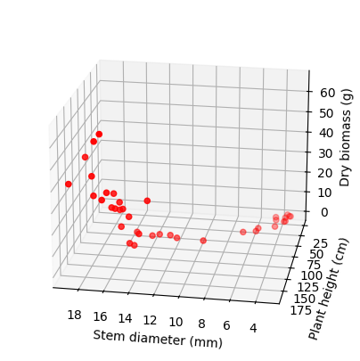
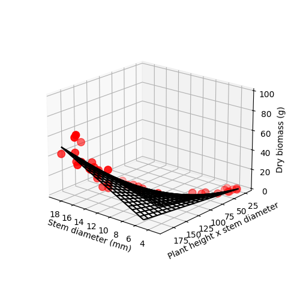

# Import modules
import numpy as np
import pandas as pd
import matplotlib.pyplot as plt
import statsmodels.api as sm61 Multiple linear regression
Multiple linear regression analysis is a statistical technique used to model the relationship between two or more independent variables (x) and a single dependent variable (y). By fitting a linear equation to observed data, this method allows for the prediction of the dependent variable based on the values of the independent variables. It extends simple linear regression, which involves only one independent variable, to include multiple factors, providing a more comprehensive understanding of complex relationships within the data. The general formula is: y = \beta_0 \ + \beta_1 \ x_1 + ... + \beta_n \ x_n
An agronomic example that involves the use of multiple linear regression are allometric measurements, such as estimating corn biomass based on plant height and stem diameter.
# Read dataset
df = pd.read_csv("../datasets/corn_allometric_biomass.csv")
df.head(3)| height_cm | stem_diam_mm | dry_biomass_g | |
|---|---|---|---|
| 0 | 71.0 | 5.7 | 0.66 |
| 1 | 39.0 | 4.4 | 0.19 |
| 2 | 55.5 | 4.3 | 0.30 |
# Re-define variables for better plot semantics and shorter variable names
x_data = df['stem_diam_mm'].values
y_data = df['height_cm'].values
z_data = df['dry_biomass_g'].values# Plot raw data using 3D plots.
# Great tutorial: https://jakevdp.github.io/PythonDataScienceHandbook/04.12-three-dimensional-plotting.html
fig = plt.figure(figsize=(5,5))
ax = plt.axes(projection='3d')
#ax = fig.add_subplot(projection='3d')
# Define axess
ax.scatter3D(x_data, y_data, z_data, c='r');
ax.set_xlabel('Stem diameter (mm)')
ax.set_ylabel('Plant height (cm)')
ax.set_zlabel('Dry biomass (g)')
ax.view_init(elev=20, azim=100)
plt.show()
# elev=None, azim=None
# elev = elevation angle in the z plane.
# azim = stores the azimuth angle in the x,y plane.
# Full model
# Create array of intercept values
# We can also use X = sm.add_constant(X)
intercept = np.ones(df.shape[0])
# Create matrix with inputs (rows represent obseravtions and columns the variables)
X = np.column_stack((intercept,
x_data,
y_data,
x_data * y_data)) # interaction term
# Print a few rows
print(X[0:3,:])[[ 1. 5.7 71. 404.7 ]
[ 1. 4.4 39. 171.6 ]
[ 1. 4.3 55.5 238.65]]# Run Ordinary Least Squares to fit the model
model = sm.OLS(z_data, X)
results = model.fit()
print(results.summary()) OLS Regression Results
==============================================================================
Dep. Variable: y R-squared: 0.849
Model: OLS Adj. R-squared: 0.836
Method: Least Squares F-statistic: 63.71
Date: Wed, 27 Mar 2024 Prob (F-statistic): 4.87e-14
Time: 14:12:19 Log-Likelihood: -129.26
No. Observations: 38 AIC: 266.5
Df Residuals: 34 BIC: 273.1
Df Model: 3
Covariance Type: nonrobust
==============================================================================
coef std err t P>|t| [0.025 0.975]
------------------------------------------------------------------------------
const 18.8097 6.022 3.124 0.004 6.572 31.048
x1 -4.5537 1.222 -3.727 0.001 -7.037 -2.070
x2 -0.1830 0.119 -1.541 0.133 -0.424 0.058
x3 0.0433 0.007 6.340 0.000 0.029 0.057
==============================================================================
Omnibus: 9.532 Durbin-Watson: 2.076
Prob(Omnibus): 0.009 Jarque-Bera (JB): 9.232
Skew: 0.861 Prob(JB): 0.00989
Kurtosis: 4.692 Cond. No. 1.01e+04
==============================================================================
Notes:
[1] Standard Errors assume that the covariance matrix of the errors is correctly specified.
[2] The condition number is large, 1.01e+04. This might indicate that there are
strong multicollinearity or other numerical problems.height (x1) does not seem to be statistically significant. This term has a p-value > 0.05 and the range of the 95% confidence interval for its corresponding \beta coefficient includes zero.
The goal is to prune the full model by removing non-significant terms. After removing these terms, we need to fit the model again to update the new coefficients.
# Define prunned model
X_prunned = np.column_stack((intercept,
x_data,
x_data * y_data))
# Re-fit the model
model_prunned = sm.OLS(z_data, X_prunned)
results_prunned = model_prunned.fit()
print(results_prunned.summary()) OLS Regression Results
==============================================================================
Dep. Variable: y R-squared: 0.838
Model: OLS Adj. R-squared: 0.829
Method: Least Squares F-statistic: 90.81
Date: Wed, 27 Mar 2024 Prob (F-statistic): 1.40e-14
Time: 14:13:05 Log-Likelihood: -130.54
No. Observations: 38 AIC: 267.1
Df Residuals: 35 BIC: 272.0
Df Model: 2
Covariance Type: nonrobust
==============================================================================
coef std err t P>|t| [0.025 0.975]
------------------------------------------------------------------------------
const 14.0338 5.263 2.666 0.012 3.349 24.719
x1 -5.0922 1.194 -4.266 0.000 -7.515 -2.669
x2 0.0367 0.005 6.761 0.000 0.026 0.048
==============================================================================
Omnibus: 12.121 Durbin-Watson: 2.194
Prob(Omnibus): 0.002 Jarque-Bera (JB): 13.505
Skew: 0.997 Prob(JB): 0.00117
Kurtosis: 5.135 Cond. No. 8.80e+03
==============================================================================
Notes:
[1] Standard Errors assume that the covariance matrix of the errors is correctly specified.
[2] The condition number is large, 8.8e+03. This might indicate that there are
strong multicollinearity or other numerical problems.The prunned model has: - r-squared remains similar - one less parameter - higher F-Statistic 91 vs 63 - AIC remains similar (the lower the better)
# Access parameter/coefficient values
print(results_prunned.params)[14.03378102 -5.09215874 0.03671944]# Create surface grid
# Xgrid is grid of stem diameter
x_vec = np.linspace(x_data.min(), x_data.max(), 21)
# Ygrid is grid of plant height
y_vec = np.linspace(y_data.min(), y_data.max(), 21)
# We generate a 2D grid
X_grid, Y_grid = np.meshgrid(x_vec, y_vec)
# Create intercept grid
intercept = np.ones(X_grid.shape)
# Get parameter values
pars = results_prunned.params
# Z is the elevation of this 2D grid
Z_grid = intercept*pars[0] + X_grid*pars[1] + X_grid*Y_grid*pars[2]Alternatively you can use the .predict() method of the fitted object. This option would required flattening the arrays to make predictions:
X_pred = np.column_stack((intercept.flatten(), X_grid.flatten(), X_grid.flatten() * Y_grid.flatten()) )
Z_grid = model_prunned.predict(params=results_prunned.params, exog=X_pred)
Z_grid = np.reshape(Z_grid, X_grid.shape) # Reset shape to match # Plot points with predicted model (which is a surface)
# Create figure and axes
fig = plt.figure(figsize=(5,5))
ax = plt.axes(projection='3d')
ax.scatter3D(x_data, y_data, z_data, c='r', s=80);
surf = ax.plot_wireframe(X_grid, Y_grid, Z_grid, color='black')
#surf = ax.plot_surface(Xgrid, Ygrid, Zgrid, cmap='green', rstride=1, cstride=1)
ax.set_xlabel('Stem diameter (mm)')
ax.set_ylabel('Plant height x stem diameter')
ax.set_zlabel('Dry biomass (g)')
ax.view_init(20, 130)
fig.tight_layout()
ax.set_box_aspect(aspect=None, zoom=0.8) # Zoom out to see zlabel
ax.set_zlim([0,100])
plt.show()

# We can now create a lambda function to help use convert other observations
corn_biomass_fn = lambda stem,height: pars[0] + stem*pars[1] + stem*height*pars[2]# Test the lambda function using stem = 11 mm and height = 120 cm
biomass = corn_biomass_fn(11, 120)
print(round(biomass,2), 'g')6.49 g